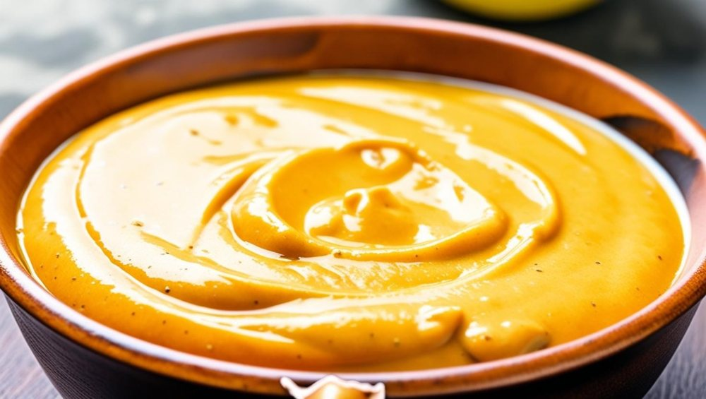

Acompanhamentos
Molho “KFC”

Ingredientes
- 1 potinho de creme de ricota light (200 g)
- 40 g de ketchup
- 40 g de mel
- 40 g de mostarda
- 20 g de parmesão ralado
- ½ dose de molho inglês
- Para temperar: 1 colher (café) de páprica defumada, cebola em pó, pimenta-do-reino e sal a gosto
- Suco de ½ limão
Modo de preparo
- Em uma tigela média, coloque o creme de ricota, o ketchup, a mostarda e o mel. Misture bem com um batedor de arame ou colher até ficar homogêneo.
- Adicione o queijo parmesão ralado, o molho inglês, a páprica e a cebola em pó. Despeje o suco de meio limão e tempere com sal e pimenta-do-reino a gosto. Mexa novamente até que todos os ingredientes estejam bem misturados.
Observação
Receita de um vídeo do TikTok de @lucaslacerdanutri. A captura de tela corta o texto no meio do passo 2, então o final do modo de preparo pode estar incompleto (como nos outros molhos do vídeo, leve à geladeira por um tempo antes de usar para apurar o sabor).